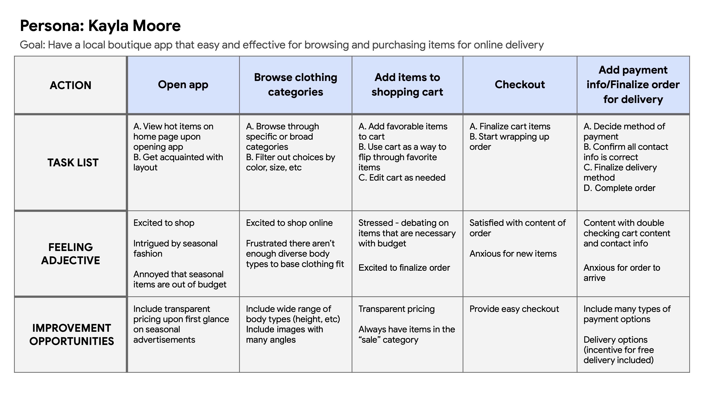
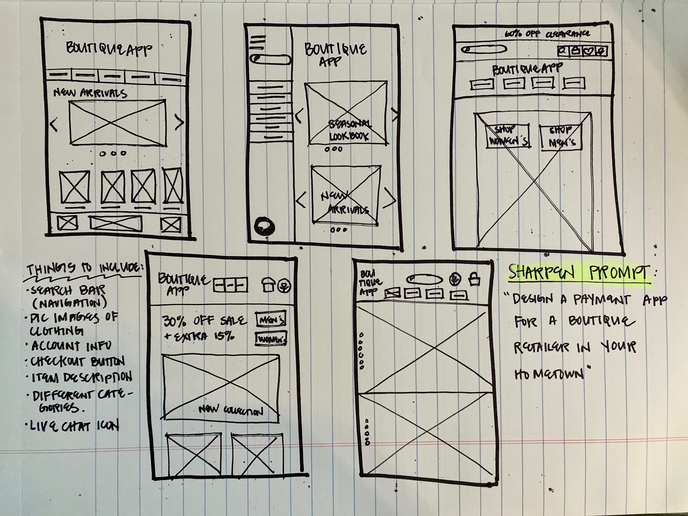
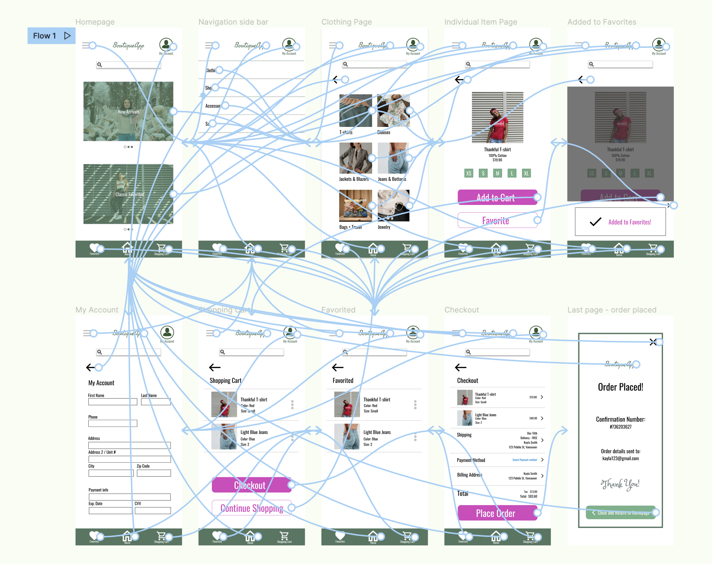

Busy professionals and individuals who are constantly on-the-go lack time to shop for themselves at the mall
Design an app that contains all items that would be carried in stores, with detailed pictures, sizing and modeling that will for confidence in purchasing the right item for an individual.
BoutiqueApp is a regional retailer with multiple branches located in the suburbs. They offer all their clothing and accessories modeled by individuals in various sizes and heights so customers get a good idea of how items will fit. BoutiqueApp targets busy professionals who are on-the-go and rely on apps and online ordering to get their purchasing done.
UX Designer in charge of BoutiqueApp's design from conception to delivery
Conducting interviews, low-fidelity paper + digital wireframes, high-fidelity prototypes, usability studies, planning for accessibility, and iterating on designs.
September 2021 - January 2022
I planned out questions, conducted interviews and created empathy maps to understand the user’s needs and target a good user flow. A primary user group identified during the research included individuals who lead busy lives (work, school) and don’t have time to spend at the mall. This user group confirmed initial assumptions, but also revealed that individuals were more interested in leisure, outdoor activities and valued family time than spending their time commuting, browsing and physically shopping at the mall. All these factors combined were reasons for individuals to prefer shopping via an app.
Individuals did not want to spend a large amount of time commuting to stores and browsing them in-person
Digital platforms were not thorough with providing enough material to determine accurate sizing
Too much text and images spread out on a page were difficult to browse on
Kayla is a busy event planner who needs to do her shopping online because her sporadic work schedule allows her to shop around her clients' needs, whenever that may be
Mapping Kayla’s journey revealed how helpful it would be for users to have a clothing app that had accurate sizing and an easy checkout process.
I started drafting iterations of a homescreen page with user pain points in mind. The initial designs focused on a clean landing page with straightforward navigation.
As the design phase continued, I also made iterations based on user comments and concerns, and strived to make the overall user flow easy to follow.
Organized navigation located in one place for mobile device was a crucial design element for user accessibility.
Two rounds of usability studies were conducted and helped guide iterations moving forward. The first study assisted in design needs from wireframes to mockups, while the second study used a high-fidelity prototype and revealed what sections of the mockups needed to be updated.
In early designs, I spaced out items the shopping cart far away from each other. After the first usability study, users wanted a more concise organization of shopping cart details.
The second usability study revealed confusion when the "Add to Favorites" button was hit on an item page, there was no indication that action was complete, so I added a pop-up notification confirming the action.
WCAG contrast between text and color were cross-checked to ensure readability
Icons with small labels beneath (e.g. Account icon) were used to ensure it's function is clear
Large, bold call-to-action buttons were used to grab users' attention
The final high-fidelity prototype is a lot cleaner and simpler for users to browse items, add to cart, and checkout.
View the BoutiqueApp high-fidelity prototype here
The app allows individuals to feel comfortable in purchasing items that will fit well, and confident that the store is thorough in sharing item details.
One quote from peer feedback:
“The app made it easy for me to shop online! I’m confident
that what will arrive at my doorstep is something I won’t have
to return later in-store.”
I’ve learned to keep design elements simple. The layout and call-to-action buttons should be clear and clean for a user to press buttons with minimal confusion.